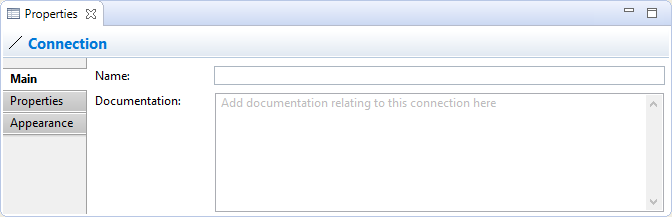

Selecting a Connection in a View means that you can edit or view its properties in the Properties Window.
The Main Tab
Main Properties for a Connection
| Name: | The name of the Connection. If present this will appear next to the connection on the View. |
| Documentation: | A space to enter some documentation relating to this Connection. |
The Properties Tab
For more information about creating and managing User Properties see User Properties.
The Appearance Tab

Appearance Properties for a Connection
| Show Label: | If selected will show the label if the connection's text is set. |
| Text Position: | Sets the position of the text that will appear next to the connection on the View. Options are "Source", "Middle" and "Target". |
| Line Style: | Sets the connection line's source and target head types and main line style. |
| Line Colour: | Sets the colour of the connection. Click on the main part of the button to set the colour. The "Default" drop-down option sets the line colour to the default setting as set in Preferences. |
| Line Width: | Sets the width of the connection. Options are "Normal", "Medium" and "Heavy". |
| Text Alignment: | Align text to Left, Centred or Right. |
| Font: | Sets the font. Click on the main part of the button to set the font. The "Default" drop-down option sets the font to the default setting as set in Preferences. |
| Font Colour: | Sets the colour of the font. Click on the main part of the button to set the colour. The "Default" drop-down option sets the font colour to the default setting as set in Preferences. |
The Label Tab
By default, a connection's name will be displayed in the View in which it appears. Using a label expression, you can choose what is displayed for the connection. For example you may wish to display the connection's name and one or more of its properties.
For a full list of expression types please refer to the Archi Wiki.